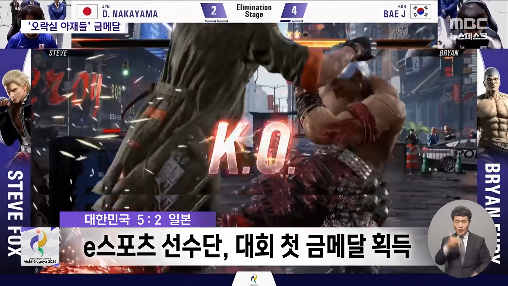
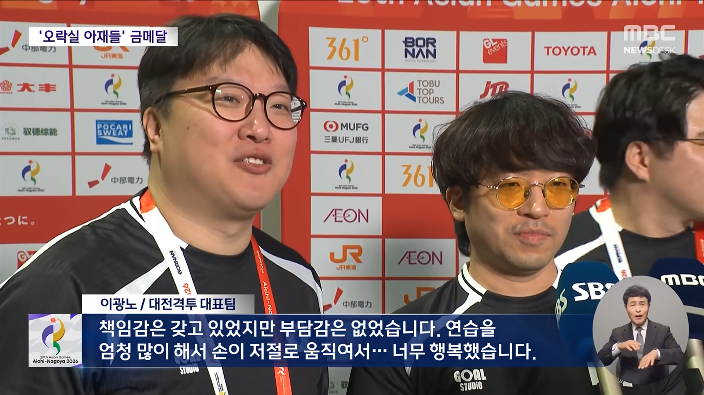
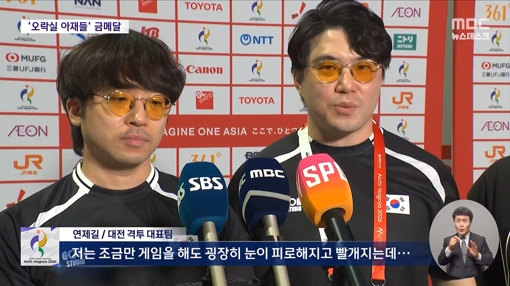
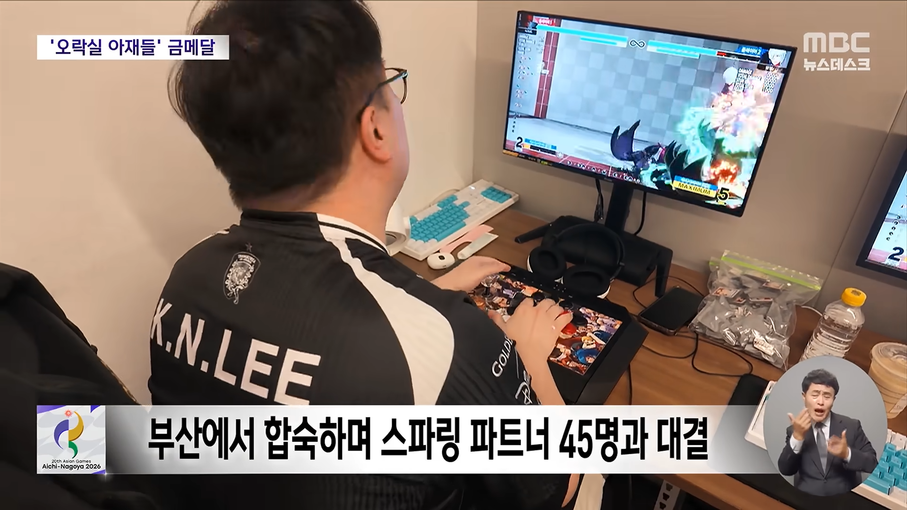
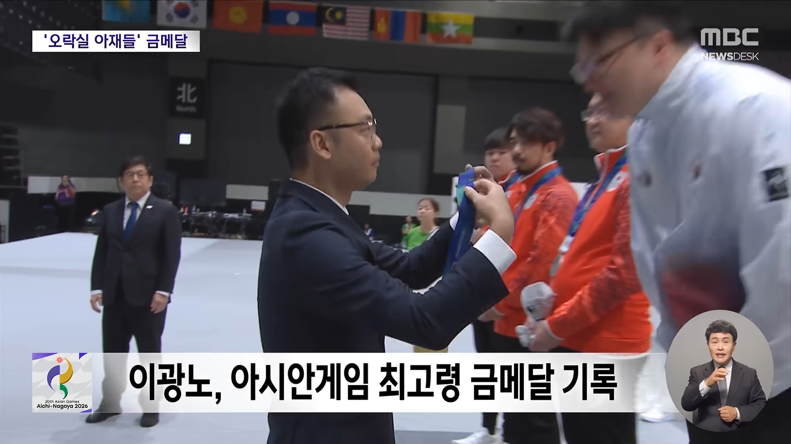
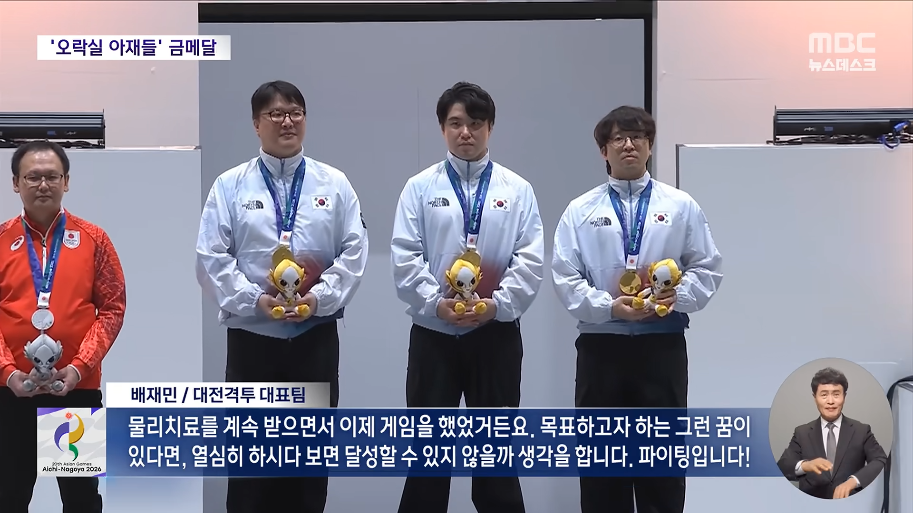

침침한 눈으로 금메달ㅋ






침침한 눈으로 금메달ㅋ
무릎은 한물 감?
아니 아직 나지롱
저기잇자나
무릎 본명이 배재민
한때 부진하다가 다시 부활함
3명중엔 젤 만만함 ㅋㅋㅋ
마지막 사진 오른쪽
철권8이 기존 철권 시리즈들이랑 다르게 공격적인 움직임을 강요했는데 무릎은 막고 때리는 수비형 유저였어서 초반에 좀 주춤했었는데
요즘은 다시 날아다님. 파키스탄 최고수들 몇명 제외하곤 아직도 다 패고 다니는 느낌
격겜은 선발전으로 뽑기때문에
잘하는애들 다 이기고 뽑힌거임
변색렌즈 안경인가
블루라이트 안경이래
그 후원하는 업체에서 준거 라고함. 블루 라이트 차단 기능이 매우 뛰어나대.
그리고 그냥 안경 끼고 계신 한 분은 안경을 받긴 했는데, 안경테의 사이즈가 맞지 않아서 못 쓴거래
이런건 기자가 센스있게 닉네임도 같이좀 써주지...ㅋㅋㅋ
사실 e 스포츠 선수는 닉네임이 정체성이잖아..
ㄹㅇ 닉네임으로 부르고 옆에 본명 넣어야지
이름이 제길 이셔...?
뭐여 동네형 금메달 ㅋㅋㅋㅋㅋ
간만에 방송함 가야겠네
어린아이와 노인을 조심해라…
아니 글쎄 자기가 노인이라는 사람인데 처음하나봐 이제 키설정을 했데
저 경기 어제 봤는데 게임 한개만 하는게 아니라 다른 게임도 번갈아가면서 하더라. 철권이랑 스트리트 파이터 같던데 게임 여러가지 하는 건 신기했어
은메달 받으신 분도 한 연세 하시는 것 같은데 ㅋㅋㅋ
파키스탄은 철권만 잘하고 스파랑 킹오파는 못해서 못 나온 거?
세 게임 다 잘하는 나라가 거의 없어서 철저히 일본에게 유리한 룰이었지
게다가 스파는 일본이 압도적 정배였으니까
신기했던건
끝나고 선수들이 감독이 큰 역할 해줬다 하던데
저런 류의 경기도 감독의 역할이 있더라..
게임 선택 순서?? 스코어까지 감독 예측대로
갔다던데...
'FIGHT'
단어 알지?
싸워.
이런 거 한 감독보다 더 일 잘했네
합숙 스케줄 잡는거랑 스파링 파트너 섭외한거랑 피드백 다 해줬잖아.
게임할때도 피지컬파랑 뇌지컬파가 있잖아. 감독이 선수들보다 좀 더 나은가 보지 분석영상도 엄청 보고
대충 킹오파는 우리가 확실하니까 점수 먹고 간다. 철권은 우리가 우세니까 최대한 이겨준다.
스파는 불리하니까 이겨서 뱐수 창출해라.
대충 유불리 종목파악하고 거기에 맞춰 진팀이 게임 고르는거 작전짠듯?
문뜩 궁금해져서 찾아보니 뿌요뿌요는 꼬맹이가 금메달이네 ㅋㅋㅋㅋ 최고령 대 최연소인가 ㅋㅋ
그 어떤 프로가 bae j 가 누구야? 하다가 니인걸 알고 당황했다는데ㅋㅋㅋㅋ
그나저나 노비랑은 다음주에도 대회로 만난다는데 어쩔려나 ㅋㅋㅋ
일본은 최연소 한국은 최고령ㅋㅋㅋ
동형 금메달 받았구나
니들이 만든 게임 우리가 우승함ㅋ
뿌요뿌요랑은 존나 극과극이네